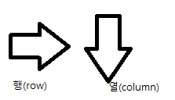
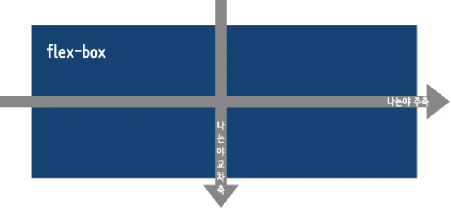

flexbox 란 박스 내 요소 간의 공간 배분과 정렬 기능을 제공하기 위한 1차원 레이아웃 모델이다.
flexbox 를 1차원 모델이라 부르는 이유는, 레이아웃을 다룰 때 한번에 하나의 차원(행이나 열)
만을 다룬다는 특성 때문이다.

flexbox를 flex컨테이너라고도 함.(요소를 포함하기 때문에)
flex 컨테이너를 만들기 위해서는 컨테이너에 display: flex;를 적용 해줘야함.
적용 전
적용 후
flexbox에는 '주축(main-axis)'와 '교차축(cross-axis)' 이 있다

주축은 기본적으로 가로방향(행) 교차축은 세로방향(열) 목적에 따라 주축과 교차축을 바꿔가며 레이아웃을 결정할수 있음.
만약 세로 방향을 주축으로 결정하면 자연스럽게 가로 방향이 교차축이 됨.
주축이 무엇이냐에 따라 레이아웃에 많은 변화가 생김.
| 속성값 | 의미 |
|---|---|
| row | 기본값. 주축은 행이고 방향은 콘텐츠의 방향과 동일 |
| row-reverse | 주축은 행이고 방향은 콘텐츠의 방향과 반대 |
| column | 주축은 열이고 방향은 콘텐츠의 방향과 동일 |
| column-reverse | 주축은 열이고 방향은 콘텐츠의 방향과 반대 |